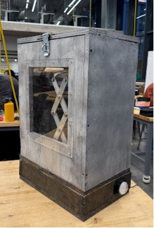
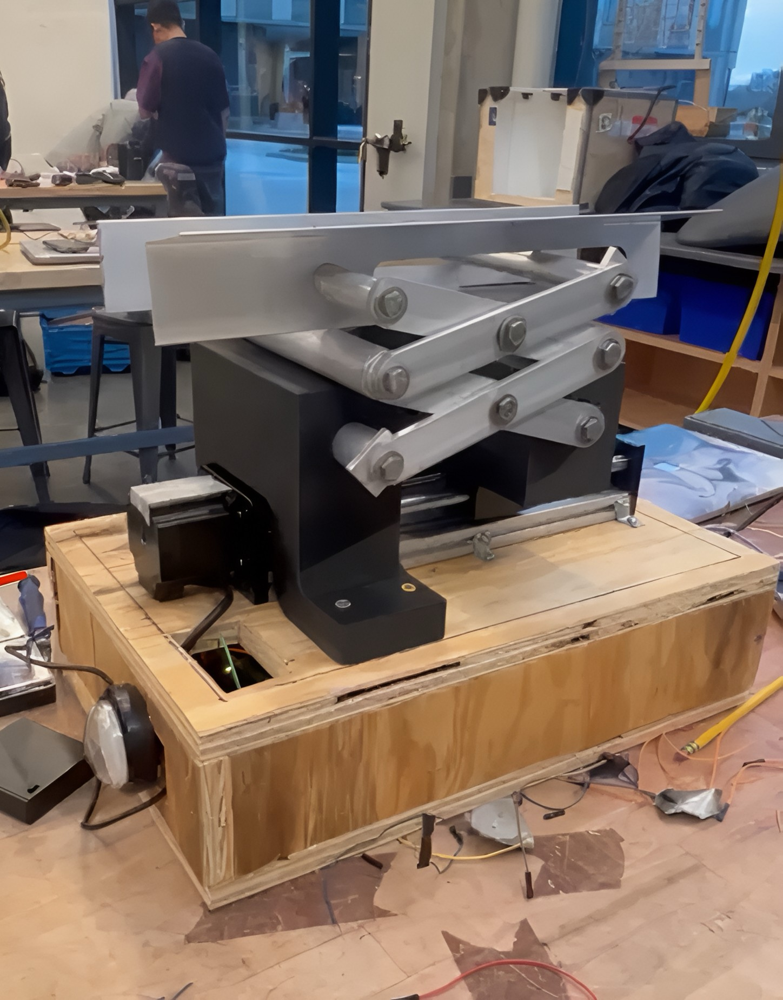
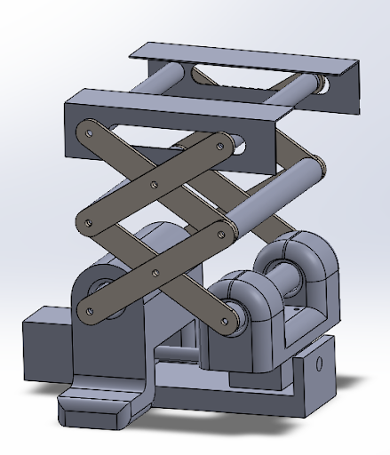
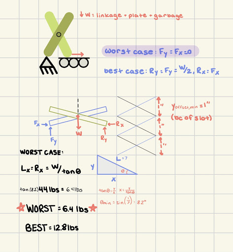
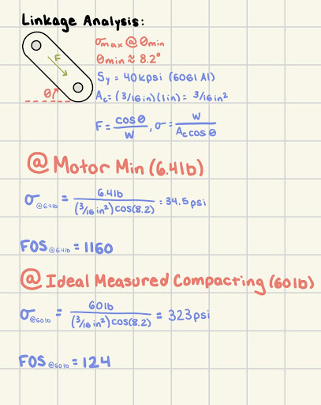

(01)
Trash Compactor
Designing and fabricating a home trash compactor system for reducing waste volume and plastic bag usage.
Overview
For our MechE Capstone course, 24-441: Product design, my team and I were tasked with designing and fabricating a product with a significant mechanical component, given a budget of $800. We chose to develop a trash compactor for reducing trash volume and minimizing bag consumption. Our product targets homeowners, particularly in pay-as-you-throw communities, where residents are charged based on the amount of waste they generate.
Design Process
We began by analyzing competitor products, evaluating their strengths and weaknesses. Many options required manual user force or were expensive and required professional installation. We were inspired to develop an affordable, compact, and user-friendly product, brainstorming potential designs ideas. After ranking them based on effectiveness, durability, feasibility, and ease of use, we selected our final design. Throughout the design process, we applied Design for Manufacturing and Assembly (DFMA), Failure Mode and Effects Analysis (FMEA), and Design for Environment (DFE) principles.
Product Features
Our prototype features a compacting system housed inside a wooden trash bin, designed to be fully operational with no user assembly required. The system utilizes a scissor lift mechanism to compress household trash. When the user presses a button, the linkage system pushes a plate upward to compress the trash against the lid, holds the position for 10 seconds, and then retracts. The base of the compactor contains a box housing the system's key electrical components: a linear actuator, a stepper motor, and an Arduino board. The motor is powered by a standard outlet, while the Arduino is powered by a battery pack. The compactor also features a latching system to allow the user to securely lock the lid in place.


Our linkage system is constructed from aluminum bars and rods, which we machined using a manual lathe and mill. To connect the linkage system to the compactor plate, my team and I used aluminum L-brackets, which were also machined with a mill. For attaching the linkage system to the linear actuator, we designed custom attachments in SolidWorks and fabricated them out of PLA using 3D printing. Additionally, we cut and assembled the wood for the trash bin receptacle, securing the panels, hinges, and locking mechanism in place with screws. While the prototype closely resembles the final design, mass production would use different materials and methods for scalability.

Analysis Process
To aid prototyping, we developed detailed CAD models of the system, which allowed us to determine the correct dimensions for our linkage system and wooden bin. We also performed hand calculations to estimate the motor's strength and the weight the linkage system could support, considering both worst-case and best-case scenarios. In the worst-case scenario, we assumed the roller as the only support point, while the best-case scenario assumed an even distribution of force between the pin and roller. These calculations suggested the system could support a load between 6.4 to 12.8 lbs without stalling. Further analysis revealed a Factor of Safety (FOS) of 1160 for a 6.4-lb load and 124 for a 60-lb load, which we determined was ideal for compressing trash through testing. Based on these findings, we identified that the motor's load capacity was the limiting factor in the system's strength. As a result, we plan to include a stronger motor in the final design for mass production.


Results
Our team was able to successfully fabricate a functioning prototype of our trash compactor. We presented it at the CMU Fall 2024 MechE Design Expo, where we won Best Overall Project. This project provided me with valuable hands-on experience in mechatronics, Arduino programming, and machining.